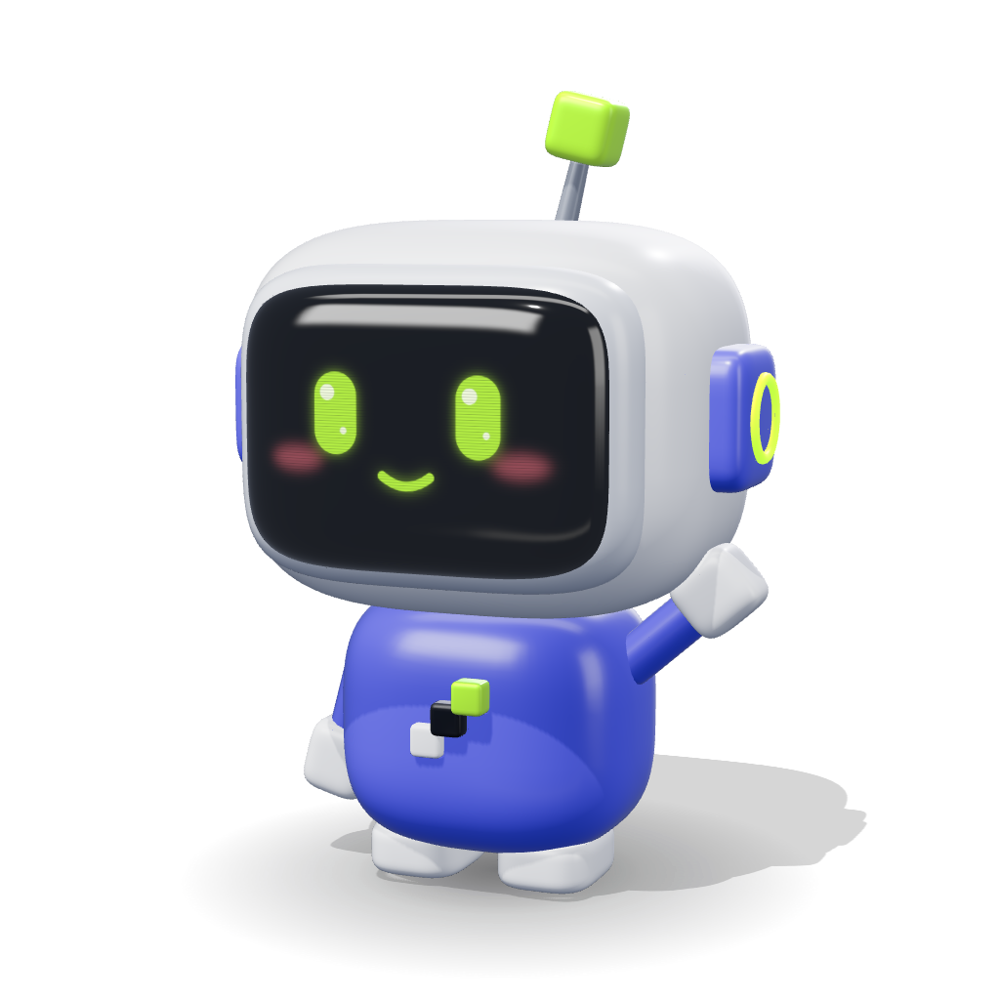

<title>Modu Visor 3D</title>
<meta name="claude:viewport-fit-sides" content="cover">
<link rel="preconnect" href="https://fonts.googleapis.com">
<link rel="preconnect" href="https://fonts.gstatic.com" crossorigin>
<link rel="stylesheet" href="https://fonts.googleapis.com/css2?family=Space+Grotesk:wght@500;700&family=Inter:wght@400;500;700&family=Noto+Sans+Thai:wght@400;500;700&display=swap">
<style>
/* Layout: a large live 3D stage with controls beside it, then bands for variants, faces, changes and chat. Stills are transparent PNGs on tinted panels. */
:root {
  --lime: #B6F23A; --indigo: #5B6CFF; --ink: #0E1116;
  --bg: #FFFFFF; --surface: #F4F6F8; --text: #0E1116; --muted: #4A5160; --border: #DDE1E8;
  --link: #3A47C9; --chip-bg: #E4E7FF; --chip-fg: #3A47C9; --pick: #EEFBC8; --pick-fg: #3F5A08;
  --tint: #E4E7FF; --stage: #E4E7FF;
  --display: "Space Grotesk", "Noto Sans Thai", system-ui, sans-serif;
  --sans: "Inter", "Noto Sans Thai", system-ui, sans-serif;
}
@media (prefers-color-scheme: dark) {
  :root:not([data-theme="light"]) {
    --bg: #0E1116; --surface: #171B22; --text: #F4F6F8; --muted: #C9CEDA; --border: #4A5160;
    --link: #8F9BFF; --chip-bg: #232A5E; --chip-fg: #C9CEFF; --pick: #1F2A10; --pick-fg: #D3F58A;
    --tint: #1E2350; --stage: #1E2350; color-scheme: dark;
  }
}
:root[data-theme="dark"] {
  --bg: #0E1116; --surface: #171B22; --text: #F4F6F8; --muted: #C9CEDA; --border: #4A5160;
  --link: #8F9BFF; --chip-bg: #232A5E; --chip-fg: #C9CEFF; --pick: #1F2A10; --pick-fg: #D3F58A;
  --tint: #1E2350; --stage: #1E2350; color-scheme: dark;
}
* { box-sizing: border-box; }
body { background: var(--bg); color: var(--text); font: 400 16px/1.6 var(--sans); }
.wrap { max-width: 1160px; margin: 0 auto; padding-left: max(16px, env(safe-area-inset-left, 0px)); padding-right: max(16px, env(safe-area-inset-right, 0px)); }
section { padding-block: 56px; border-top: 1px solid var(--border); }
h1, h2, h3 { font-family: var(--display); margin: 0; text-wrap: balance; }
h2 { font-size: 30px; line-height: 36px; font-weight: 700; letter-spacing: -0.02em; }
h3 { font-size: 17px; line-height: 24px; font-weight: 700; }
p { margin: 0; }
img { display: block; }
.eyebrow { font: 500 13px/18px var(--sans); letter-spacing: 0.08em; text-transform: uppercase; color: var(--muted); }
.muted { color: var(--muted); }
.sec-head { display: grid; gap: 8px; max-width: 680px; margin-bottom: 28px; }
.sec-head p:not(.eyebrow) { color: var(--muted); }

/* header + stage */
header { padding-block: 40px 56px; }
.intro { display: grid; gap: 14px; max-width: 760px; margin-bottom: 32px; }
header h1 { font-size: clamp(38px, 6.5vw, 60px); line-height: 1.04; font-weight: 700; letter-spacing: -0.035em; }
.lede { font-size: 18px; line-height: 28px; }
.studio { display: grid; gap: 24px; grid-template-columns: minmax(0, 1fr); align-items: start; }
.studio > * { min-width: 0; }
@media (min-width: 900px) { .studio { grid-template-columns: minmax(0, 1.35fr) minmax(0, 1fr); gap: 40px; } }
.stage { position: relative; aspect-ratio: 1 / 1; width: 100%; max-width: 100%; border-radius: 28px; background: var(--stage); overflow: hidden; transition: background-color .3s; }
.stage img, .stage canvas { position: absolute; inset: 0; width: 100%; height: 100%; }
.stage canvas { touch-action: pan-y; cursor: grab; opacity: 0; transition: opacity .4s; }
.stage canvas:active { cursor: grabbing; }
.stage.live canvas { opacity: 1; }
.stage.live img { opacity: 0; }
.hint { position: absolute; left: 16px; bottom: 14px; font-size: 13px; color: var(--ink); background: rgba(255, 255, 255, .78); border-radius: 999px; padding: 4px 12px; }
.controls { display: grid; gap: 22px; }
.controls fieldset { border: 0; margin: 0; padding: 0; display: grid; gap: 10px; min-width: 0; }
.controls legend { font-weight: 500; padding: 0; margin-bottom: 10px; }
.chips { display: flex; flex-wrap: wrap; gap: 8px; }
.chip { font: 500 14px/20px var(--sans); color: var(--text); background: var(--bg); border: 1px solid var(--border); padding: 7px 14px; border-radius: 999px; cursor: pointer; }
.chip:hover { border-color: var(--muted); }
.chip[aria-pressed="true"] { background: var(--text); color: var(--bg); border-color: var(--text); }
.chip:focus-visible, .btn:focus-visible, .swatch:focus-visible { outline: 3px solid var(--indigo); outline-offset: 2px; }
.swatch { width: 40px; height: 40px; border-radius: 12px; border: 1px solid var(--border); cursor: pointer; padding: 0; }
.swatch[aria-pressed="true"] { outline: 3px solid var(--text); outline-offset: 2px; }
.note { font-size: 14px; line-height: 21px; color: var(--muted); }

/* variants */
.variants { display: grid; gap: 20px; grid-template-columns: repeat(auto-fit, minmax(260px, 1fr)); }
.variant { display: grid; gap: 12px; align-content: start; min-width: 0; }
.variant .pic { background: var(--tint); border-radius: 24px; overflow: hidden; }
.variant .pic img { width: 100%; height: auto; }
.variant .name { display: flex; align-items: baseline; gap: 10px; flex-wrap: wrap; }
.variant .name small { color: var(--muted); font-size: 15px; }
.variant p { font-size: 15px; line-height: 23px; }
.variant .fit { color: var(--muted); }
.btn { font: 500 14px/20px var(--sans); border: 1px solid var(--border); background: var(--bg); color: var(--text); border-radius: 999px; padding: 9px 18px; cursor: pointer; justify-self: start; }
.btn:hover { border-color: var(--muted); }
.badge { font: 700 12px/16px var(--sans); background: var(--pick); color: var(--pick-fg); padding: 3px 10px; border-radius: 999px; }

/* faces */
.faces { display: grid; gap: 14px; grid-template-columns: repeat(2, minmax(0, 1fr)); }
@media (min-width: 700px) { .faces { grid-template-columns: repeat(4, minmax(0, 1fr)); } }
.faces figure { margin: 0; display: grid; gap: 6px; min-width: 0; }
.faces .pic { background: var(--tint); border-radius: 18px; overflow: hidden; }
.faces .pic img { width: 100%; height: auto; }
.faces figcaption { display: grid; gap: 0; }
.faces figcaption b { font-family: var(--display); font-size: 15px; }
.faces figcaption span { font-size: 13px; line-height: 18px; color: var(--muted); }

/* before / after + changes */
.change { display: grid; gap: 32px; grid-template-columns: minmax(0, 1fr); align-items: start; }
@media (min-width: 900px) { .change { grid-template-columns: minmax(0, 1fr) minmax(0, 1fr); } }
.ba { display: grid; grid-template-columns: minmax(0, 1fr) minmax(0, 1fr); gap: 12px; }
.ba figure { margin: 0; display: grid; gap: 8px; min-width: 0; }
.ba .pic { background: var(--tint); border-radius: 20px; aspect-ratio: 1 / 1; display: grid; place-items: center; padding: 12px; }
.ba .pic svg, .ba .pic img { width: 100%; height: auto; display: block; }
.ba figcaption { font-size: 14px; color: var(--muted); text-align: center; }
.list { list-style: none; margin: 0; padding: 0; display: grid; gap: 16px; }
.list li { display: grid; gap: 2px; }
.list span { color: var(--muted); }

/* chat */
.chatwrap { display: grid; gap: 24px; grid-template-columns: minmax(0, 1fr); }
.chatwrap > * { min-width: 0; }
@media (min-width: 900px) { .chatwrap { grid-template-columns: minmax(0, 1.2fr) minmax(0, 1fr); } }
.chat { border: 1px solid var(--border); border-radius: 24px; overflow: hidden; background: var(--bg); }
.chat-head { display: flex; gap: 12px; align-items: center; padding: 14px 18px; border-bottom: 1px solid var(--border); }
.chat-head b { display: block; font-family: var(--display); }
.chat-head small { color: var(--muted); font-size: 13px; }
.av { width: 44px; height: 44px; flex: none; border-radius: 14px; background: var(--tint); overflow: hidden; }
.av img { width: 100%; height: 100%; }
.chat-body { display: grid; gap: 14px; padding: 18px; }
.msg { display: flex; gap: 10px; align-items: flex-end; }
.msg.me { justify-content: flex-end; }
.bubble { max-width: 78%; padding: 10px 14px; border-radius: 16px; font-size: 15px; line-height: 22px; min-width: 0; }
.msg.me .bubble { background: var(--text); color: var(--bg); border-bottom-right-radius: 4px; }
.msg.bot .bubble { background: var(--surface); border-bottom-left-radius: 4px; }
.sizes { display: flex; gap: 20px; align-items: flex-end; flex-wrap: wrap; background: var(--surface); border-radius: 20px; padding: 20px; }
.sizes figure { margin: 0; display: grid; gap: 6px; justify-items: center; }
.sizes .av { border-radius: 28%; }
.sizes figcaption { font-size: 13px; color: var(--muted); font-variant-numeric: tabular-nums; }
.rec { margin-top: 16px; background: var(--pick); border-radius: 20px; padding: 22px 24px; display: grid; gap: 6px; }
.rec b { font-family: var(--display); color: var(--pick-fg); }
footer { padding-block: 32px 48px; border-top: 1px solid var(--border); color: var(--muted); font-size: 14px; }
@media (prefers-reduced-motion: reduce) { *, *::before, *::after { transition: none !important; } }
</style>

<header>
  <div class="wrap">
    <div class="intro">
      <p class="eyebrow">Modu · รอบที่ 3</p>
      <h1>Modu Visor แบบ 3D</h1>
      <p class="lede">ต่อยอดจากแบบ Visor ที่คุณเลือก ผมปั้นใหม่เป็นโมเดล 3D จริง ผิวไวนิลเงาแบบของเล่น หน้าเป็นจอ LED และทุกชิ้นเป็นโมดูลทรงลูกเต๋ามนตามแนวคิดของ Moduro ลากเพื่อหมุนดูรอบตัว แล้วขยับเมาส์ Modu จะหันมามอง</p>
    </div>
    <div class="studio">
      <div class="stage" id="stage">
        
        <canvas id="gl" aria-label="โมเดล 3D ของ Modu ลากเพื่อหมุน"></canvas>
        <span class="hint">ลากเพื่อหมุน · ดับเบิลคลิกเพื่อกลับมุมเดิม</span>
      </div>
      <div class="controls">
        <fieldset><legend>แบบ</legend><div class="chips" id="cVariant"></div></fieldset>
        <fieldset><legend>สีหน้า</legend><div class="chips" id="cFace"></div></fieldset>
        <fieldset><legend>พื้นหลัง</legend><div class="chips" id="cBg"></div></fieldset>
        <p class="note" id="status">กำลังโหลดโมเดล 3D ระหว่างนี้แสดงภาพนิ่งก่อน</p>
      </div>
    </div>
  </div>
</header>

<section>
  <div class="wrap">
    <div class="sec-head">
      <p class="eyebrow">Variants</p>
      <h2>3 แบบให้เลือก</h2>
      <p>หน้าจอและสีเหมือนกันทุกแบบ ต่างกันที่ทรงตัว เลือกแบบที่ชอบ หรือผสมกันก็ได้</p>
    </div>
    <div class="variants" id="variants"></div>
  </div>
</section>

<section>
  <div class="wrap">
    <div class="sec-head">
      <p class="eyebrow">Expressions</p>
      <h2>สีหน้า 8 แบบบนจอ</h2>
      <p>เปลี่ยนแค่ภาพบนจอ ตัวเหมือนเดิม จึงใช้บอกสถานะของผู้ช่วย AI ได้ทันที ภาพชุดนี้เป็นแบบ <b id="facesVariant">Classic</b></p>
    </div>
    <div class="faces" id="faces"></div>
  </div>
</section>

<section>
  <div class="wrap change">
    <div class="ba" aria-label="เทียบรอบที่ 2 กับรอบที่ 3">
      <figure><div class="pic" id="before"></div><figcaption>รอบที่ 2 · ภาพวาดเวกเตอร์</figcaption></figure>
      <figure><div class="pic"></div><figcaption>รอบที่ 3 · โมเดล 3D</figcaption></figure>
    </div>
    <div>
      <div class="sec-head" style="margin-bottom:20px">
        <p class="eyebrow">What changed</p>
        <h2>ปรับอะไรจากรอบที่แล้ว</h2>
      </div>
      <ul class="list">
        <li><h3>ปั้นเป็นโมเดล 3D จริง</h3><span>ผิวไวนิลเงา สะท้อนไฟสตูดิโอ มีเงาตกพื้น ไม่ใช่ภาพไล่สี</span></li>
        <li><h3>หน้าจอแบบ LED</h3><span>ตาใหญ่ขึ้นและมีประกาย แก้มชมพูเรืองแสง มีเส้นสแกนเหมือนจอจริง</span></li>
        <li><h3>Volt lime ตรงสีแบรนด์</h3><span>ส่วนที่เรืองแสงไม่ผ่านการปรับโทนภาพ สีเขียวจึงไม่ซีดเป็นเหลือง</span></li>
        <li><h3>ทุกชิ้นเป็นโมดูล</h3><span>หู มือ เท้า และเสาอากาศเป็นลูกเต๋ามน เสาอากาศเอียงขึ้นขวาตามทิศ Step Up</span></li>
        <li><h3>โลโก้ Step Up 3 มิติที่อก</h3><span>บล็อกขาว หมึก และเขียว นูนไล่ระดับขึ้นทีละขั้น</span></li>
        <li><h3>มีชีวิต</h3><span>กะพริบตา หันมองตามเมาส์ โบกมือ และลอยตัวเบา ๆ</span></li>
      </ul>
    </div>
  </div>
</section>

<section>
  <div class="wrap">
    <div class="sec-head">
      <p class="eyebrow">In chat</p>
      <h2>เป็นอวตารผู้ช่วย AI</h2>
      <p>ในแชตใช้ภาพครอปหัว สีหน้าบอกสถานะของคำตอบ</p>
    </div>
    <div class="chatwrap">
      <div class="chat">
        <div class="chat-head"><span class="av"></span><div><b>Modu</b><small>ผู้ช่วย Moduro · พร้อมช่วย</small></div></div>
        <div class="chat-body">
          <div class="msg me"><div class="bubble">ช่วยเชื่อม LINE OA เข้ากับระบบสต็อกให้หน่อย</div></div>
          <div class="msg bot"><span class="av"></span><div class="bubble">กำลังหาโมดูลที่ต่อกันได้…</div></div>
          <div class="msg bot"><span class="av"></span><div class="bubble">เชื่อมเสร็จแล้ว ใช้โมดูล LINE Messaging กับ Stock Sync ยอดสต็อกจะส่งเข้า LINE ทุก 5 นาที</div></div>
          <div class="msg bot"><span class="av"></span><div class="bubble">ยังส่งข้อความไม่ได้ เพราะ token ของ LINE OA หมดอายุ ไปที่ ตั้งค่า &gt; LINE แล้วกดเชื่อมใหม่นะ</div></div>
        </div>
      </div>
      <div>
        <div class="sizes" id="sizes"></div>
        <div class="rec">
          <b>ผมแนะนำแบบ Hoodie</b>
          <p>หุ่นหน้าจอมีให้เห็นเยอะในตลาด ฮู้ดสีครามทำให้ Modu จำได้ทันทีแม้เห็นแค่เงา และยังใช้กับเสื้อหรือสติกเกอร์ได้ดี ถ้าอยากได้ลุคเทคที่เรียบกว่า เลือก Classic</p>
        </div>
      </div>
    </div>
  </div>
</section>

<section>
  <div class="wrap">
    <div class="sec-head" style="margin-bottom:0">
      <p class="eyebrow">Next</p>
      <h2>เลือกแบบ แล้วผมจะทำชุดไฟล์ใช้งานจริง</h2>
      <p>บอกแบบที่ชอบ และส่วนที่อยากปรับ เช่น สีฮู้ด รูปตา หรือเสาอากาศ แล้วผมจะทำภาพ PNG พื้นใสทุกสีหน้าและท่าทาง อวตารทุกขนาด และชุดสติกเกอร์</p>
    </div>
  </div>
</section>

<footer>
  <div class="wrap">โมเดล 3D สร้างด้วยโค้ดใน <code>visor3d/modu3d.js</code> (three.js) · ภาพนิ่งเรนเดอร์ใหม่ได้ด้วย <code>npm run render</code> · สีและฟอนต์ตาม Moduro design system</div>
</footer>

<script src="concepts.js"></script>
<script>
  (function () {
    var VARIANTS = [
      { id: 'classic', name: 'Classic', th: 'ยืนสองขา แขนสั้น', desc: 'หัวหมวกไวนิลสีขาว ตัวสีคราม แขนขาสั้นแบบของเล่น หูเป็นโมดูลสีครามมีไฟวงแหวนสีเขียว อ่านง่ายที่สุดในสามแบบ', fit: 'ตัวหลักของแบรนด์ เว็บไซต์ แชต' },
      { id: 'hover', name: 'Hover', th: 'ลอยตัว มีวงแหวนไฟ', desc: 'ไม่มีขา ตัวเล็กลง มือลอยได้ และมีวงแหวนไฟสี Volt lime ใต้ตัว ดูเหมือนผู้ช่วยที่พร้อมลอยมาช่วยตลอด', fit: 'วิดเจ็ตแชตมุมจอ ผู้ช่วยในแอป' },
      { id: 'hoodie', name: 'Hoodie', th: 'ใส่ฮู้ดสีคราม', desc: 'ฮู้ดสีครามคลุมหัว เหลือแค่จอหน้า เชือกฮู้ดปลายสีเขียว มีกระเป๋าหน้าท้อง ได้แรงบันดาลใจจากหุ่นใส่ฮู้ดที่เห็นบ่อยบน Pinterest ดูเป็นสตรีทที่สุด', fit: 'โซเชียล เสื้อ สติกเกอร์ สินค้าที่ระลึก', pick: true }
    ];
    var FACES = [
      ['happy', 'ยิ้ม', 'ค่าเริ่มต้น ทักทาย'], ['joy', 'ดีใจ', 'งานเสร็จ เชื่อมต่อสำเร็จ'], ['think', 'กำลังคิด', 'ระหว่างประมวลผล'],
      ['focus', 'ตั้งใจทำงาน', 'งานนาน มีแถบความคืบหน้าบนจอ'], ['surprised', 'ว้าว', 'ฟีเจอร์ใหม่ ประกาศ'], ['wink', 'ขยิบตา', 'ทิปส์ ทางลัด'],
      ['sleepy', 'พักอยู่', 'ออฟไลน์ หน้าว่าง'], ['oops', 'อุ๊ปส์', 'ผิดพลาด ต้องบอกวิธีแก้เสมอ']
    ];
    var BGS = [['#E4E7FF', 'ลาเวนเดอร์'], ['#FFFFFF', 'ขาว'], ['#EEFBC8', 'เขียวอ่อน'], ['#0E1116', 'Ink']];
    window.MODU_PAGE = { VARIANTS: VARIANTS, FACES: FACES };

    var current = { variant: 'classic', expression: 'happy' };
    function pressed(box, v) { box.querySelectorAll('button').forEach(function (b) { b.setAttribute('aria-pressed', String(b.dataset.v === v)); }); }
    function chip(box, v, label, onClick, cls) {
      var b = document.createElement('button');
      b.type = 'button'; b.className = cls || 'chip'; b.dataset.v = v; b.setAttribute('aria-pressed', 'false');
      if (cls === 'swatch') { b.style.background = v; b.setAttribute('aria-label', 'พื้นหลัง ' + label); b.title = label; } else b.textContent = label;
      b.addEventListener('click', onClick);
      box.appendChild(b);
      return b;
    }
    var cVariant = document.getElementById('cVariant'), cFace = document.getElementById('cFace'), cBg = document.getElementById('cBg');
    VARIANTS.forEach(function (v) { chip(cVariant, v.id, v.name, function () { setVariant(v.id); }); });
    FACES.forEach(function (f) { chip(cFace, f[0], f[1], function () { setFace(f[0]); }); });
    BGS.forEach(function (b) { chip(cBg, b[0], b[1], function () { document.getElementById('stage').style.background = b[0]; pressed(cBg, b[0]); }, 'swatch'); });

    function setVariant(v) {
      current.variant = v;
      pressed(cVariant, v);
      document.getElementById('poster').src = 'renders/' + v + '.png';
      document.getElementById('facesVariant').textContent = VARIANTS.filter(function (x) { return x.id === v; })[0].name;
      document.querySelectorAll('[data-face]').forEach(function (img) { img.src = 'renders/' + v + '-' + img.dataset.face + '.png'; });
      if (window.moduViewer) window.moduViewer.set({ variant: v });
    }
    function setFace(e) {
      current.expression = e;
      pressed(cFace, e);
      if (window.moduViewer) window.moduViewer.set({ expression: e });
    }
    window.MODU_PAGE.current = current;

    // variant cards
    var vbox = document.getElementById('variants');
    VARIANTS.forEach(function (v) {
      var d = document.createElement('article');
      d.className = 'variant';
      d.innerHTML = '<div class="pic"></div>' +
        '<div class="name"><h3>' + v.name + '</h3><small>' + v.th + '</small>' + (v.pick ? '<span class="badge">แนะนำ</span>' : '') + '</div>' +
        '<p>' + v.desc + '</p><p class="fit">เหมาะกับ: ' + v.fit + '</p>';
      var btn = document.createElement('button');
      btn.type = 'button'; btn.className = 'btn'; btn.textContent = 'ดูแบบนี้ในโมเดล 3D';
      btn.addEventListener('click', function () { setVariant(v.id); document.getElementById('stage').scrollIntoView({ behavior: 'smooth', block: 'center' }); });
      d.appendChild(btn);
      vbox.appendChild(d);
    });

    // faces grid
    var fbox = document.getElementById('faces');
    FACES.forEach(function (f) {
      var fig = document.createElement('figure');
      fig.innerHTML = '<div class="pic"></div><figcaption><b>' + f[1] + '</b><span>' + f[2] + '</span></figcaption>';
      fbox.appendChild(fig);
    });

    // avatar sizes
    var sbox = document.getElementById('sizes');
    [96, 64, 44, 32, 24].forEach(function (px) {
      var fig = document.createElement('figure');
      fig.innerHTML = '<span class="av" style="width:' + px + 'px;height:' + px + 'px"></span><figcaption>' + px + ' px</figcaption>';
      sbox.appendChild(fig);
    });

    // round 2 drawing for the before/after
    if (window.ModuConcepts) document.getElementById('before').innerHTML = window.ModuConcepts.draw('visor', { expression: 'wink' });

    setVariant('classic');
    setFace('happy');
    setTimeout(function () {
      if (!document.getElementById('stage').classList.contains('live')) document.getElementById('status').textContent = 'เบราว์เซอร์นี้เปิดโมเดล 3D ไม่ได้ จึงแสดงภาพนิ่งแทน';
    }, 10000);
    pressed(cBg, '#E4E7FF');
    if (matchMedia('(prefers-color-scheme: dark)').matches && document.documentElement.dataset.theme !== 'light') pressed(cBg, '');
  })();
</script>
<script type="module">
  import { createViewer } from './modu3d.js';
  const stage = document.getElementById('stage');
  const status = document.getElementById('status');
  try {
    const page = window.MODU_PAGE;
    window.moduViewer = createViewer(document.getElementById('gl'), { variant: page.current.variant, expression: page.current.expression });
    requestAnimationFrame(() => requestAnimationFrame(() => {
      stage.classList.add('live');
      status.textContent = 'โมเดล 3D พร้อมแล้ว ลองกดเปลี่ยนแบบและสีหน้าดู';
    }));
  } catch (err) {
    status.textContent = 'เบราว์เซอร์นี้เปิดโมเดล 3D ไม่ได้ จึงแสดงภาพนิ่งแทน';
  }
</script>
